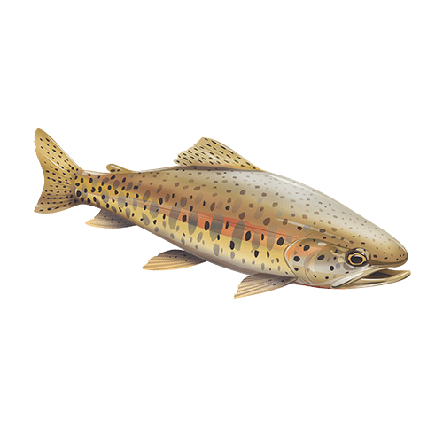
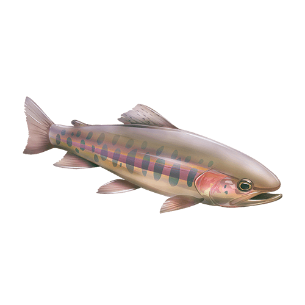

Coastal Cutthroat Trout (Oncorhynchus clarkii clarkii)
Coastal Cutthroat trout populations in California are small, fragmented, and face multiple
threats, including cumulative impacts from land use practices. While their numbers appear
to be stable in the few watersheds they inhabit it is equally likely that they have declined
in response to watershed alteration throughout their range.

Lahontan Cutthroat Trout (Oncorhynchus clarkii henshawi)
Despite significant efforts in recent years, wild, self-sustaining Lahontan Cutthroat trout in
California face a large and increasing risk of extinction over the next 50 years due primarily
to the presence of non-native trout and degraded habitats throughout their range.

Paiute Cutthroat Trout (Oncorhynchus clarkii seleniris)
Paiute Cutthroat trout have a high likelihood of extirpation in their native range within 50-100
years without continued commitment to intense monitoring and management. All populations are small
and isolated, and are susceptible to hybridization and local environmental changes.